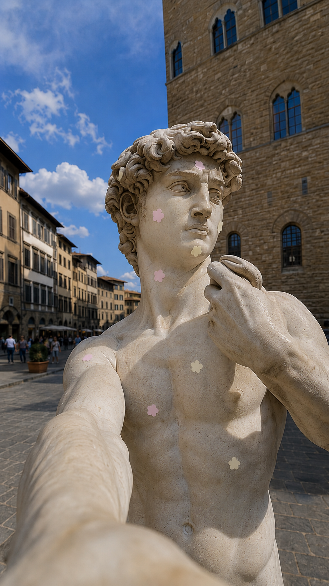
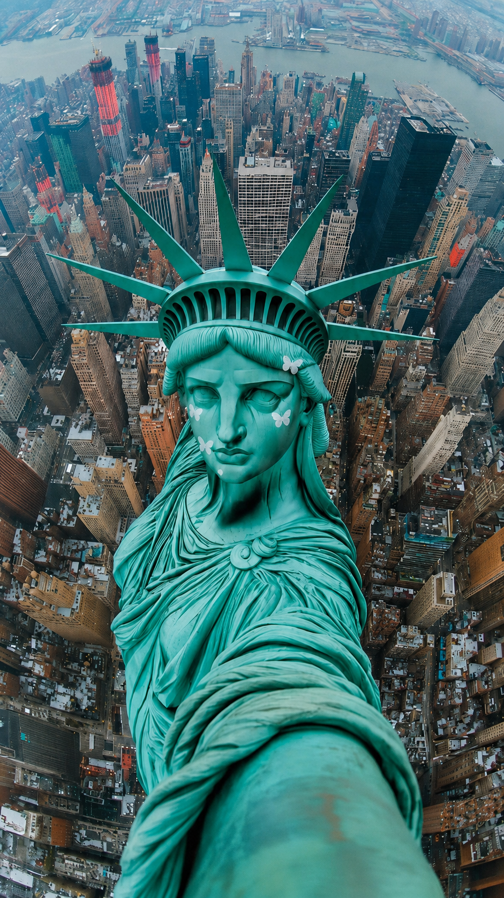

90 Days of Making with AI · Day 18
18
Landmark
Patches
Jul 7, 2026
Brand Campaign · AI Image Generation
skincare ideation
What if the world's most iconic faces needed a patch? Surreal campaign visuals for skincare ideation — where monuments go about their skincare routine.
The Campaign
Inspired by
Surreal product campaigns that drop oversized objects into real cityscapes — Snickers taped to a skyscraper, Rhode gloss sailing down the Thames. I flipped the logic: instead of enlarging the product, I put it on the landmark. The patch becomes the joke. The monument sells it.

Michelangelo's David
Flower Patch

Statue of Liberty
Butterfly Patch
Statue of Liberty
Cloud Patch
Michelangelo's David
Cloud Patch
The brief I gave myself: skincare ideation patches are cute, playful, and worn proudly — not hidden. So the campaign shouldn't be clinical. It should feel like the landmark is just… doing their morning routine. Completely unbothered. Completely iconic.